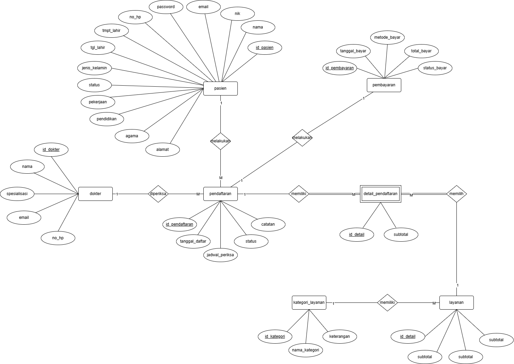
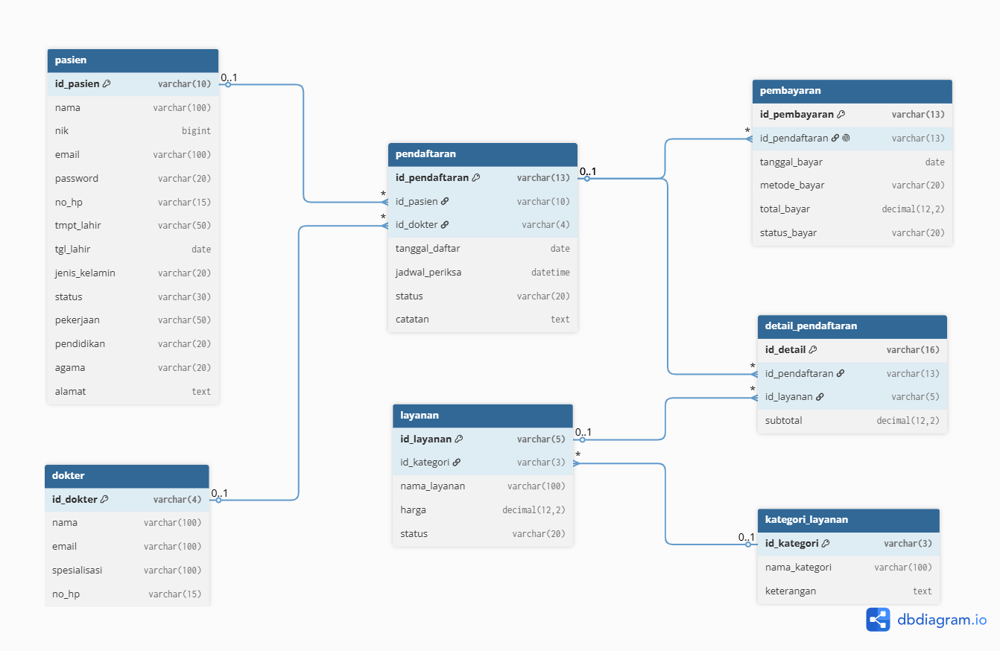
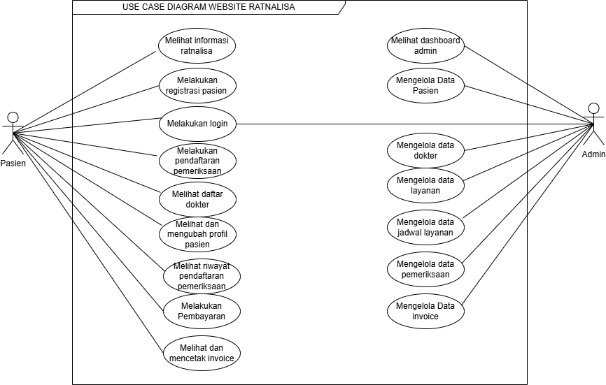
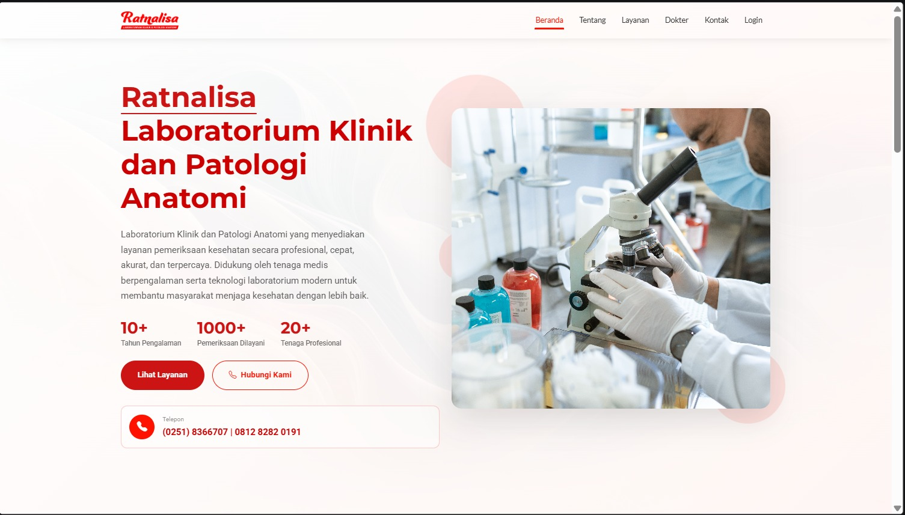
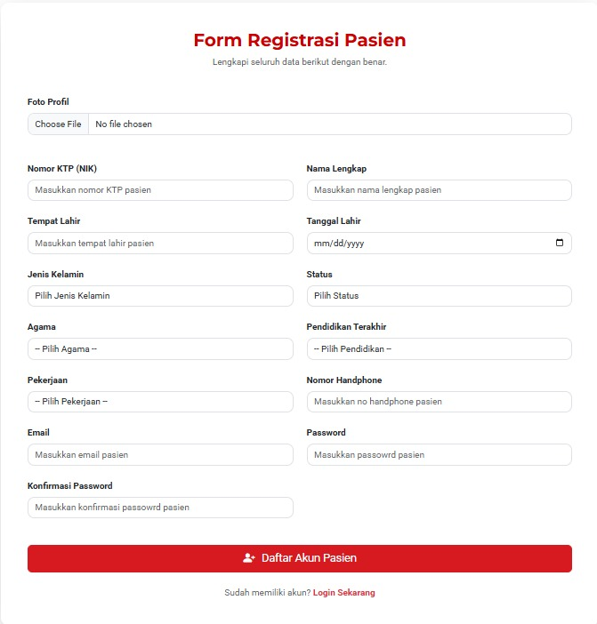
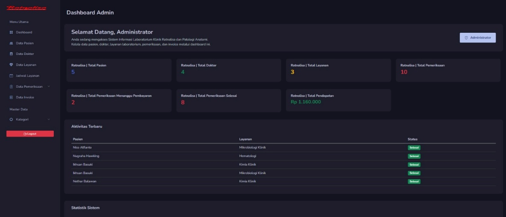
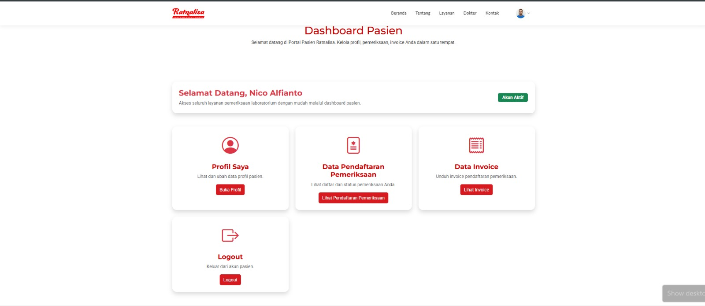
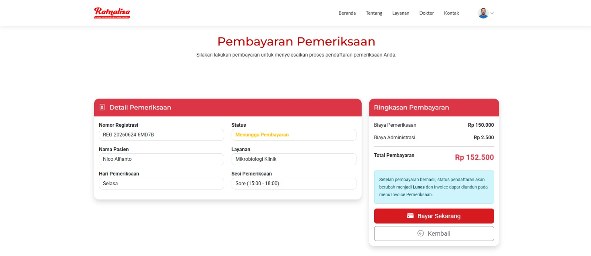

Project Background
The current patient registration process at Ratnalisa Laboratory is still manual. This causes data recording errors, difficulty in searching patient data, and slow administrative services. This web-based system was developed using the Prototyping Method to make administrative service more effective and efficient. Patients can register online without coming directly to the location.
Try The Real Application — No Simulation
This project is a working web application, not a model simulation. Click below to try the real flow: register as a patient, select lab services, and check payment.
Open Web Application →ratnalisa-klinik.ifree.pageKey Features
What the system can do.
Online registration and patient data input with automatic ID generation.
Select multiple examination services, choose a schedule, and automatic total calculation.
Support Cash, Transfer, QRIS. Admin can manage payment status and proof.
Manage patient data, registration, services, doctors, and generate reports.
How It Works — Patient Journey
End-to-end flow from registration to payment verification.
Create patient profile with automatic ID generation.
Choose multiple examination services at once.
Pick examination date and time slot.
Cash, Bank Transfer, or QRIS. Total calculated automatically.
Admin verifies payment and manages registration in dashboard.
System Design & Documentation
Database and UML modeling. Click to zoom.
ERD — Entity Relationship Diagram

LRS — Logical Record Structure

UML Use Case Diagram

Application Screenshots
Real screens from the deployed application. Click to zoom.
Homepage

Patient Registration Form

Admin Dashboard

Patient Dashboard

Payment Page

Project Team
Roles in this capstone project.
| Name | Role |
|---|---|
| Nico Alfianto | Project Manager |
| Muhammad Ikhsan Basuki | Backend Developer |
| Marcho Dominggus Deviano Timisela | Frontend Developer |
| Awaludin Al Ayubi | UI / UX Designer |
| Nethar Balawan Mualikul Mulki | Documentation |
Related Courses: System Modeling • System Design • Web Programming 3
Known Issues — v1.0
Transparent status. The core flow works, these are improvements for v1.1.
| Issue | Status |
|---|---|
| Some edge cases in payment proof upload may fail on slow connections | Investigating |
| Admin dashboard loads slowly when patient data grows large | Planned — Pagination |
| Mobile layout needs polish on small screens for long forms | Planned — Responsive fix |
Conclusion
Ratnalisa replaces manual patient registration with a web-based system that reduces recording errors, speeds up search, and simplifies payment management. Built with Prototyping Method, the system was iterated based on real admin workflow — from patient registration, lab service selection, automatic total calculation, to payment verification.